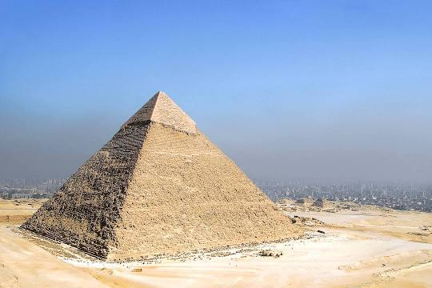
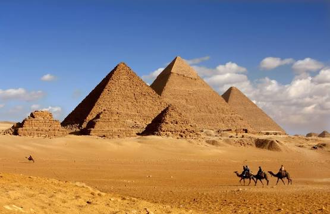
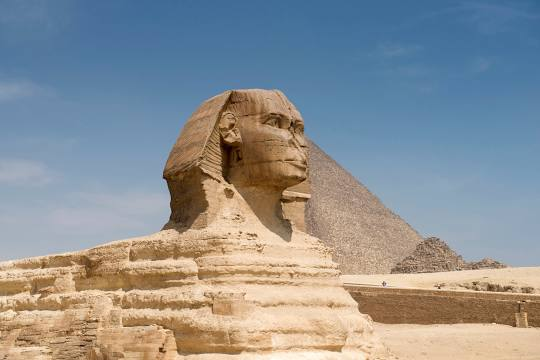
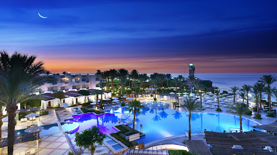
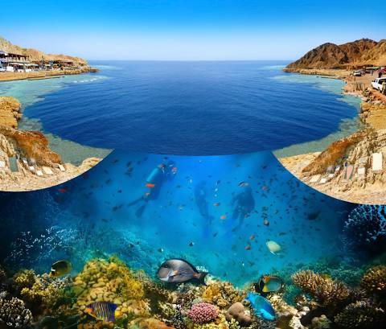
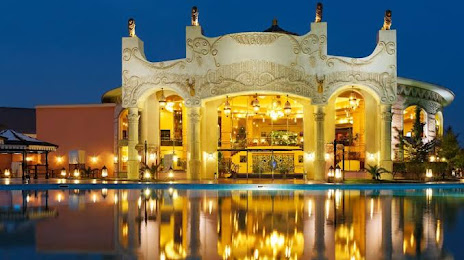

L'Egypte
| LE NIL, SOURCE DE VIE | DES CIVILISATIONS MILLÉNAIRES | UN PAYS SÛR ET TRANQUILLE | UN PEUPLE ATTACHANT | LA MER ROUGE |
|---|---|---|---|---|
| En steamer ou en dahabieh, embarquez pour une croisière intemporelle sur le grand fleuve ! Karnak, Edfou, Kom Ombo, Philae : vous découvrirez les sites majeurs de l’Egypte antique. La navigation sur le Nil vous permettra aussi une immersion au cœur de la campagne égyptienne, à la rencontre des paysans cultivant sur ses rives. | Pharaonique, copte, grecque, romaine, musulmane, l’Egypte est riche des vestiges des civilisations successives qui l’ont façonnée. Du Caire à Alexandrie, de Louxor à Assouan, ce sont des millénaires d’Histoire qui s’offrent à vous ! | Malgré le contexte géopolitique actuel et ses effets médiatiques négatifs, malgré les a priori : l’Égypte demeure une destination sans risques sécuritaires majeurs. En dehors de zones clairement identifiées, on y voyage en toute tranquillité. Autre avantage considérable de cette situation malheureuse pour un pays dont l’activité de 30 % de la population dépend du tourisme : les sites très touristiques de la vallée du Nil sont aujourd’hui peu fréquentés. Un atout qui ajoute à la magie des lieux pour les voyageurs qui osent soutenir l’Egypte. | L’Egypte offre à celui qui sait la recevoir une philosophie de vie précieuse, faite de fatalisme, de nonchalance et de dérision. Fumer une chicha de tabac à la pomme dans un café du Khan, laisser ainsi filer le temps toute une après-midi en compagnie de quelques Cairotes, être à leur contact initié un autre rapport au monde : une expérience rare, de celles dont on se souvient toute une vie ! | Avec ses plages paradisiaques et ses fonds marins parmi les plus beaux de la planète, la mer Rouge est la destination idéale pour un séjour farniente, baignades et plongée entre amis ou en famille ! |
Visitez les vestiges monumentaux que nous ont légués les Égyptiens de l'Antiquité, et notamment les trois grandes pyramides de Gizeh,qui sont à la fois les plus impressionnantes et les plus emblématiques de cette civilisation.

La pyramide de Khéphren

Le plateau de Gizeh

Le Sphinx de Gizeh
Vous souhaitez vous prélasser sur des plages et explorer des fonds sous-marins ? Optez pour des vacances sur la mer Rouge, le long de la côte égyptienne ! Partez explorer l'exceptionnelle faune et flore aquatique des stations balnéaires de Marsa Alam, Safaga et Hurghada, vous ne serez pas déçus ! Les vacances en mer Rouge représentent le paradis des amateurs de plongée et de planche à voile.

Complexe chic tout compris avec plage

Le Blue Hole de la mer Rouge

Complexe simple avec parc aquatique